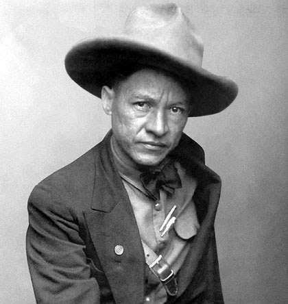

(Augusto Nicolás Calderón Sandino, Niquinohomo, Nicaragua, 1893 - Managua, 1934) Nicaraguan guerrilla leader who fought tenaciously against the US occupation and intervention to force the United States to withdraw its troops from Nicaragua. After his murder at the hands of the then head of the National Guard, Anastasio Somoza, Sandino became the ideological reference of the Sandinista National Liberation Front (FSLN) and the revolution promoted by this movement that, years later, would end the dictatorship Somocista.

Of very humble origin, Augusto Sandino worked as a miner in Nicaragua, Honduras and Mexico. In 1926 he returned to his country, occupied since 1916 by the American troops who defended the interests of the fruit companies of the United States. He opted to defend national autonomy, affected by the Bryan-Chamorro agreement and the signing of the Stimpson-Moncada treaty, for which he gathered a group of guerrillas and took up arms.
For six years Sandino fought against the troops of different governments supported by the United States, at the end of which he had managed to gather about three thousand men around him and had gained popular admiration. Organized under his command, the rebellious guerrilla took refuge in the jungles of Nueva Segovia, where it became practically invincible.
Failing to defeat him, US President Herbert C. Hoover ordered the withdrawal of troops deployed in Nicaragua, which, along with the election of Franklin D. Roosevelt as president of the United States, moved Sandino to negotiate with the Nicaraguan government the deposition of weapons and the return to civilian life (1933).
However, his political prestige continued to be a threat to the country's leaders, so, after accepting an invitation to go to the presidential palace, he was ambushed and killed by Anastasio Somoza, head of the National Guard and nephew of former President José María Moncada
However, the death of the leader did not mean the disappearance of his movement, and his name came to embody the liberation struggle of Nicaragua. The Sandinista National Liberation Front (FSLN), a political alignment created in 1962, was constituted as a continuation of Sandino's ideology and focused on the overthrow of the Somozas through armed struggle, an objective that would be achieved many years later (in 1979) force the fall of President Anastasio Somoza Debayle, son of Anastasio Somoza